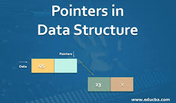
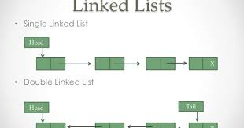

People should also read this



In today's world, we are all heavily reliant on various software products that were carefully programmed by developers. But what is computer programming?
In this article, I will provide a definition of programming, as well as examples of different types of programmers. I will also suggest a list of courses you can take to start learning how to code.
A computer program consists of code that is executed on a computer to perform particular tasks. This code is written by programmers. Programming is the process of giving machines a set of instructions that describe how a program should be carried out. Programmers will spend their whole careers learning a variety of programming languages and tools so they can effectively build computer programs. Programmers will start by using a code editor or IDE to write what is called source code. This is a collection of code written in a programming language that other programmers can read. Source code needs to be converted into machine language so machines can understand the instructions and execute the program. This process of converting source code into machine language is known as compiling. Examples of compiled programming languages would be C and C++. There are other languages that do not use compilers. Instead, these languages will use an interpreter that will read and execute the code. Examples of interpreted programming languages would be JavaScript and PHP. Once the code is executed, then the computer program can run. The different types of computer programs include Word processors, Database systems, video games, and websites. These computer programs allow us to interactive with different software devices and services like phones, websites, and the computers themselves.
Many historians believe Ada Lovelace was the first to create a published computer program in the mid 19th century. She was a mathematician who translated Luigi Federico Menabrea's writings on the Analytical Engine. In this translation, Ada had added her own extensive notes and created a method for calculating Bernoulli numbers for the Analytical Engine. The work of mathematician Alonzo Church as well as the Turing machine were the first introductions of computer codes. In the 1920's, computers were created which was followed by the earliest programming languages. For the next century, as machines and technology continued to evolve, so did the number of programming languages.
There are hundreds of programming languages in existence. Developers will first consider the needs of the application so they can decide which languages would be appropriate to use.
Here are a few popular programming languages.
Some of these languages are primarily used in one field of development while others are more general purpose programming languages. JavaScript is primarily used in web development and is usually the first programming language learned by beginner web developers. JavaScript can also be used for mobile and game development. Python can be used in a variety of areas like data analysis, machine learning, and web development.